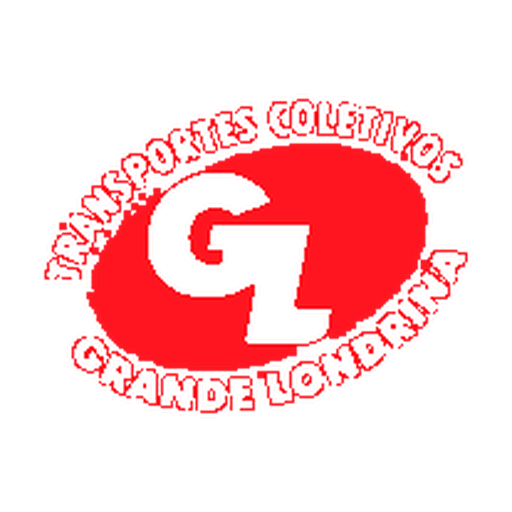

Carregando dados ao vivo…

Pontualidade em Tempo Real
Transportes Coletivos Grande Londrina
Somente TCGL
Ao vivo · atualiza a cada 30s
↻ Atualizar agora
No horário
--
--%
veículos TCGL em rota, dentro da tolerância
Atrasado
--
--%
mais de 6 min atrás do previsto
Adiantado
--
--%
mais de 2 min à frente do previsto
Indicadores oficiais TCGL (OTP/CAD) —
apurando…
No horário
--
Atrasado
--
Adiantado
--
Chegadas
--
Partidas
--
Viagens perdidas
--
IPV Custom hoje + incidentes CAD (002) —
abrir detalhe
IPV Custom
--
IPV + Incidentes
--
Incidentes hoje
--
Ganho
--
Distribuição da frota TCGL em rota
--
em rota
Contexto da frota TCGL
Frota monitorada
--
Em rota (produtivo)
--
Ocioso
--
Fora de serviço
--